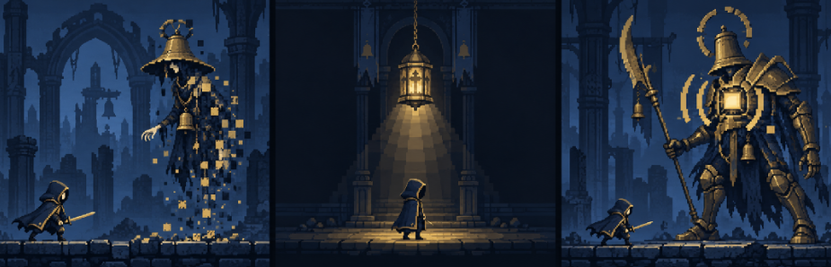

PRESENTATION REVIEW 02 · 2026.10.21
다가올 때는 거대하게.
공격할 때는 분명하게.
작은 종지기와 커다란 적의 대비.
준비 자세에서 시작해, 땅과 하늘을 가르는 공격.
3.6×보스의 기본 높이 / 주인공 대비
1.60×보스 등장 최대 줌 · 유지한 채 포효
4방향바닥 가시 · 머리 칼날 · 창찌르기 · 후방 무기비
5겹하늘부터 바닥까지 다른 속도로 이동

체급 비교 이미지 · 보스 클로즈업 스토리보드 · 공격 이펙트 4종 · 이전 v1


01 / SCALE
일반 적도 크게, 보스는 압도적으로
온은 유지하고 일반 몬스터는 높이2.0, 중간 보스3.2, 보스4.0으로 확대합니다. 같은 구도로 현재 실행본과 제안을 비교하세요. 기본 체급 확대와 등장 카메라 줌은 별개입니다.
v2 제안 크기
| 캐릭터 | 현재 → 제안 | 온 대비 | 1280×720 높이 |
|---|
온 발(500,590), 적 발(900,590). 모자·후광·무기를 포함한 대기 그림의 전체높이 기준입니다. 포즈마다 높이를 다시 맞추지 않고 대기 그림 기준 배율을 고정해 몸이 늘어나는 현상을 막습니다. 체급 변경만으로 피해량·공격 판정 범위를 바꾸지 않습니다.
02 / BOSS ENTRANCE
크게 들어가고, 멈춰 포효한 뒤, 돌아온다
포효 중에는 줌 배율과 카메라 중심을 고정합니다. 이때는 비전투 상체 클로즈업이므로 보스 다리와 온 일부가 화면 밖으로 나가도 됩니다. 전투 구도로 완전히 돌아온 뒤에만 첫 공격 예고를 시작합니다.
중간 보스 · 1.80초
줌인0.40 → 1.45배 유지·포효0.75 → 줌아웃0.45 → 정착0.20초.
재조우1.00초에도 최대 줌은 같습니다. 준비·정점 포효 포즈와 낮은 문·종·호흡 계열 음원을 제작합니다.
보스 · 2.20초
줌인0.50 → 1.60배 유지·포효1.00 → 줌아웃0.50 → 정착0.20초.
재조우1.20초에도 큰 줌 유지. 포효 후반부터 잔향을 줄여 첫 공격 신호가 묻히지 않게 합니다.
확대된 대기 그림과 가슴빛은 구도·타이밍 확인용입니다. 새 포효 동작·음원은 아직 제작 전입니다. 보스 HP는 마지막 정착0.20초에 실제값으로 나타나며, HUD는 카메라와 함께 확대하지 않습니다.
03 / ENEMY ATTACK
준비 자세가 원인, 가시와 무기비가 결과
몬스터가 준비 자세를 잡는 순간 지면 균열·공중 무기·무기 끝의 빛이 생깁니다. v1의 추상적인 괄호는 주 예고에서 내리고, 실제 공격이 올 공간과 재료를 먼저 보여줍니다.
| 방향 | 몬스터 준비 | 예고 → 타격 | 대응 |
|---|
여러 가시·무기는기본적으로 한 묶음, 한 번의 타격입니다. 후방의3발은 같은 시각에 꽂히며 장식 개수만큼 피해가 중첩되지 않습니다. 실제 연타는 기존 패턴의 각 타격마다 독립 예고를 냅니다.
큰 가시와 점프가 어긋나지 않게
가시 최대높이80px, 성공 점프의 발 높이96px 이상을 맞춥니다. 타격 시점 이후 성공 포즈를 짧게 보정하고 잔해는140ms 안에 사라집니다. 무적160ms·완벽60ms 판정은 그대로이며, 정확한 경계 프레임은 구현 후 검증합니다.
새 준비 자세가 필요합니다
이 모형은 기존 공격 그림을 준비 자세의 자리표시로 사용합니다. 실제 제작은 각 적이 쓰는 방향에 맞춰 준비→발동→회수 포즈를 연결합니다. 낮은 공격에서 바닥에 힘을 주고, 후방 공격에서 하늘을 부르는 동작이 보여야 합니다.
04 / PLAYER STRIKE
베는 궤적, 맞는 접점, 커지는 치명타
입력 후 준비 → 100ms 명중 사건에 초승 검흔·적 접점 불꽃·도트 파편·피해 숫자 동기화. 치명타는 더 큰 숫자와 짧은 강한 접점, 기존80ms 흔들림을 사용합니다. 큰 화면 점멸은 넣지 않으며 적의 현재 예고가 검흔보다 우선합니다.
05 / DEPTH
먼 성벽은 느리게, 발밑 돌은 빠르게
현재 직교2D를 유지한 채 하늘·원경·중경·가까운 기둥·바닥을 분리합니다. 이동하는 동안만 층별로 다른 거리를 흐르게 하며, 전투 중에는 멈춥니다.
| 레이어 | 바닥 대비 속도 | 160px 이동 시 | 역할 |
|---|
위 그림은 분리 레이어의 이동량을 보여주는 도형 모형입니다. 현재 합성 배경1장을 여러 깊이의 완성 자산으로 간주하지 않습니다. 실제 제작에서는 가려진 부분까지 복원한 레이어와 이음매 없는 바닥을 만듭니다.
깊이값만 바꾸는 방식은 원근 카메라에서 자동 원근차를 만들 수 있습니다. 현재 직교 카메라에서는 z를 배치·겹침에 쓰고 이동량은 별도로 계산합니다. 이번 MVP 권고는 직교+레이어 속도차입니다. 2.5D 전환은 향후 회전·전후 이동이 필요할 때 다시 비교합니다.
근거: Unity Learn · 카메라와 자동 패럴랙스 · Unity6000.3 · 직교와 원근 · 적용 방식·픽셀 안정성 검토
06 / AUDIO
전투는 또렷하게, 종소리는 여운만 남게
상업적 사용 조건이 명시된 원 제작자 자료로 후보를 골랐습니다. 효과음은 CC0 팩, 음악은 출처 표기가 필요한 CC BY4.0 곡을 검토합니다. 아직 청음·편집·다운로드·게임 삽입을 완료한 상태는 아닙니다.
| 용도 | 후보 | 조건·처리 |
|---|---|---|
| 칼 휘두름·발·이동 소재 | Kenney · RPG Audio | CC0. 팩의 개별 파일을 청음해 목적에 맞는 것만 채택. |
| 명중·가시·무기 착지 소재 | Kenney · Impact Sounds | CC0. 레이어·피치·길이 편집 후 원본과 편집 기록 보존. |
| 일반 전투 BGM | Kevin MacLeod · Darkling | CC BY4.0. 곡·저자·원문·라이선스·편집 여부 표기. 청음 후보. |
| 보스 BGM | Kevin MacLeod · Black Vortex | CC BY4.0. 포효 중 음량을 낮추고 전투 재개에 맞춰 복귀. 청음 후보. |
| 등불 로비 BGM | Kevin MacLeod · Eternal Hope | CC BY4.0. 어둠에서 등불 공개와 함께 진입. 분위기 적합성 청음 필요. |
CC0는 저작권 포기/허용 범위, CC BY는 조건을 지키는 이용허락입니다. 막연히 “무저작권”으로 표시하지 않습니다. Kenney 공식 사용 조건 · CC BY4.0 조건 · 출처·라이선스 관리표
포효는 별도 제작
두 보스의 호흡·깨진 종·금속 마찰을 직접 녹음/합성하고 검증된 CC0 금속 소리를 보조로 사용합니다. 팩 안에 적절한 포효가 있다고 가정하지 않습니다.
신호가 음악보다 먼저
예고·명중·완벽 회피를 음악보다 선명하게. 포효와 치명타 때 음악을 짧게 낮추고, 같은 순간의 무기3발은 착지 소리를 하나의 묶음으로 믹스합니다.
07 / REVIEW
이번에 정하는 것과 다음에 만드는 것
이번 결과는 체급·구도·공격 인과관계·배경 이동·음원 조건을 정한 기획입니다. 새 포효/준비/달리기 프레임, 배경 레이어 분리, 오디오 청음과 Unity 적용은 다음 제작 범위입니다.
적 분해 → 달리기 → 다음 적보스 분해 → 유물3택1 → 달리기사망 → 암전 → 등불 로비
v1의 저장·보상 중복 방지·체크포인트 계약을 유지합니다. 보스 도착 시 새 큰 줌 연출을 삽입하며, 포효·줌아웃이 예고650/900/250ms를 소모하지 않습니다.